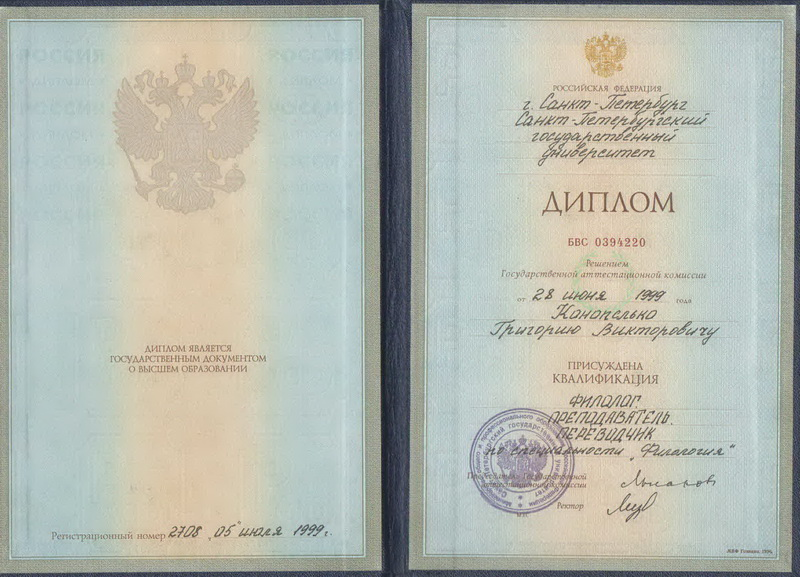
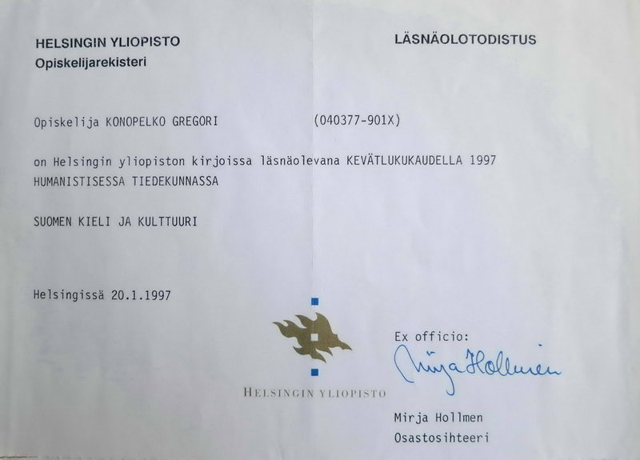
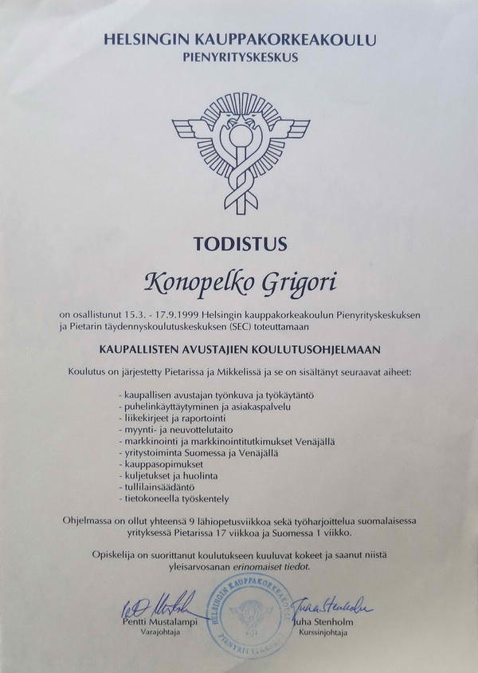

Venäjän kielen kääntäjä ja tulkki Grigori Konopelko
Facebook, VK
- Tulkki ja kääntäjä vuodesta 1999, yrittäjä omassa käännöstoimistossa Käännöstoimisto Grigori Konopelko vuodesta 2012
- Virallinen kielenkääntäjä venäjä-suomi-venäjä ja venäjä-englanti-venäjä
- Vankka kokemus tulkkauksesta erityyppisissä tilaisuuksissa, myös virallisissa vierailuissa
- Yli 20 vuoden kokemus kääntäjän tehtävistä eri aloilla, erikoissanastojen hallinta
- Venäjän toimintaympäristön ja toimintatapojen tuntemus
-
Koulutus:
- Pietarin Valtion Yliopisto, Suomalais-ugrilainen filologia; pääaine: suomen kieli; sivuaineet: venäjän kieli ja kirjallisuus, englannin kieli
- Helsingin Yliopisto, Humanistinen tiedekunta, Suomen kielen ja kulttuurin laitos, vaihto-opiskelija
- Helsingin Kauppakorkeakoulu, Pienyrityskeskus, Kaupallisten avustajien koulutusohjelma №11 (Pietari / Mikkeli)
Tavoitteena tyytyväinen asiakas.